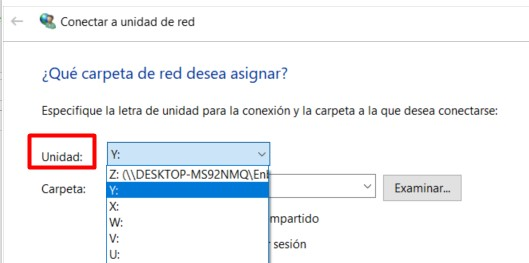

Conectar una Unidad de Red
1. Introducción
Este manual explica paso a paso cómo conectar una unidad de red compartida en un equipo con sistema operativo Windows, utilizando las carpetas compartidas de ENBLAU y Enblau Documentos.
¿Qué es una unidad de red?
Una unidad de red es una carpeta compartida en otro equipo o servidor dentro de una red local, que puedes mapear como si fuera una unidad más de tu equipo (como el disco C: o D:).
2. Compartir las carpetas desde el servidor
- En el servidor, comparte las carpetas ENBLAU y Enblau Documentos con todos los usuarios de la red.

- Ve a la pestaña Compartir y haz clic en el botón Compartir....

- En la ventana Acceso a la red, selecciona Todos en el listado de usuarios (si no aparece, escríbelo manualmente) y haz clic en Agregar.
Asegúrate de que tenga permiso de Lectura y escritura y luego haz clic en Compartir.


3. Requisitos previos
Antes de comenzar, asegúrate de cumplir con lo siguiente:
- Estar conectado a la red local o corporativa.
- Tener la dirección de la carpeta compartida (por ejemplo:
\\servidor\carpeta). - Contar con los permisos de acceso necesarios.
- Disponer del usuario y contraseña si la carpeta lo requiere.
4. Conectar la unidad de red
4.1. Abrir el explorador de archivos
- Presiona
Windows + Eo haz clic en el icono de la carpeta desde la barra de tareas.
4.2. Acceder a "Este equipo"
- En el panel lateral izquierdo, selecciona Este equipo.

4.3. Conectar a unidad de red
- En la parte superior, haz clic en la pestaña Equipo, luego en Conectar a unidad de red.

4.4. Elegir una letra de unidad
- Selecciona una letra disponible (por ejemplo:
Y:).

4.5. Ingresar la ruta de la carpeta compartida
- En el campo Carpeta, escribe la ruta en formato UNC (por ejemplo:
\\servidor\carpeta).

- Marca la opción Conectar de nuevo al iniciar sesión si deseas mantener la conexión tras reiniciar el equipo.

4.6. Ingresar credenciales (si se solicita)
- Introduce el nombre de usuario y la contraseña con acceso a la carpeta compartida.
4.7. Finalizar
- Haz clic en Finalizar. Si todo está correcto, se abrirá la unidad de red como una carpeta más en el Explorador.

5. Verificación
- Verifica que la unidad de red esté disponible en Este equipo, bajo la letra que seleccionaste.
Si no se conecta:
Revisa que la ruta esté correctamente escrita.
Asegúrate de que las credenciales sean válidas.
Confirma que tienes conexión a la red.
 Español
Español
 English
English
 Italiano
Italiano
 Português
Português